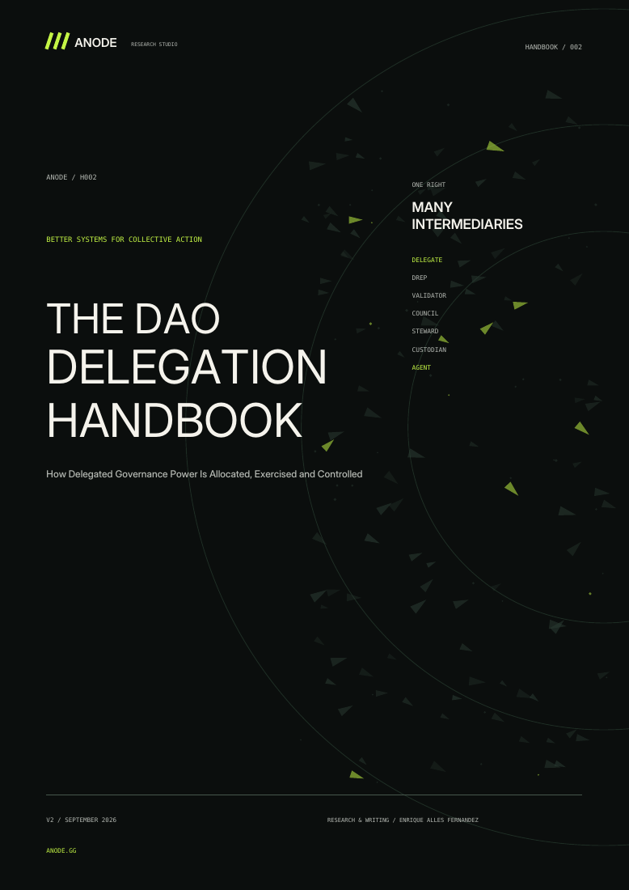

01
Decision systems
Put each decision
in the right hands.
Design roles, delegation, voting, and escalation so expertise can act without silencing the edge.
Read the practice ↗Better systems for collective action
Anode designs the roles, rules, and rewards that help networks and communities turn many perspectives into coherent action.
Collective intelligence only works when the system knows what to ask of whom.
Governance was our proving ground. It taught us that attention is scarce, expertise is uneven, and every reward changes behavior. Good systems match decisions to the people with the context to make them, while preserving a real voice for everyone affected.
Talk to the researchers ↗Research and mechanism design for groups that cannot rely on command and control.
Decision systems
Design roles, delegation, voting, and escalation so expertise can act without silencing the edge.
Read the practice ↗Incentive design
Shape compensation and recognition around long-term value, then stress-test what people will game.
Read the practice ↗Coordination architecture
Organize small, trusted units with clear mandates and interfaces so the whole can adapt quickly.
Read the practice ↗We combine fieldwork, discourse analysis, and mechanism design—then turn the findings into systems teams can run.

Handbook / 002 · September 2026
How delegated governance power is allocated, exercised and controlled.
Explore the handbook ↗Every engagement begins with a live coordination problem and ends with a system your team can operate.
Trace the actors, decisions, incentives, and information already in motion.
Ask what each participant knows, wants, can afford, and will rationally do.
Define the roles, rules, rewards, and feedback that turn intent into action.
Probe failure modes, measure real behavior, and revise before the metric becomes the target.
For teams whose hardest problems cannot be solved alone